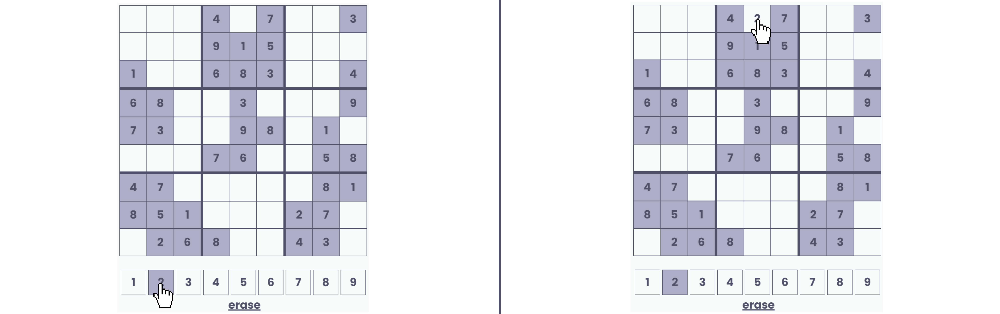
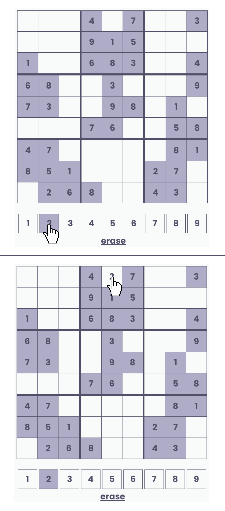
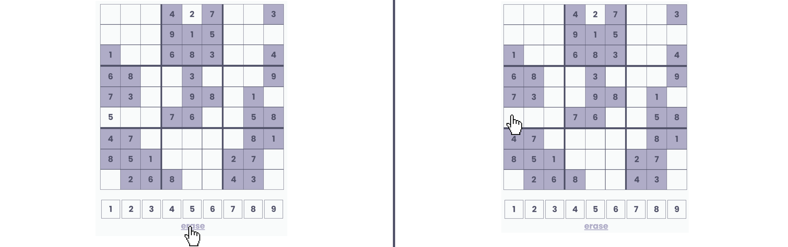
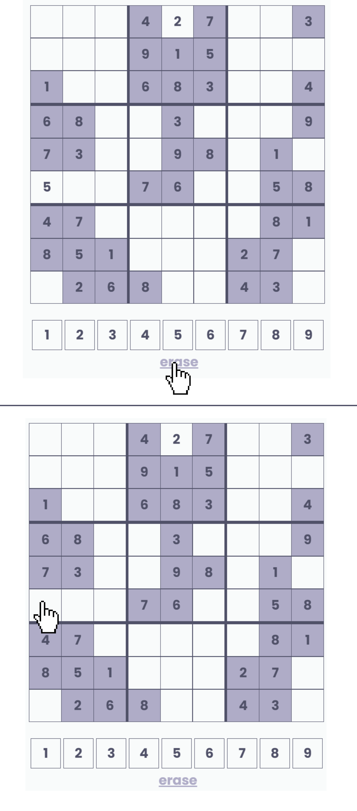
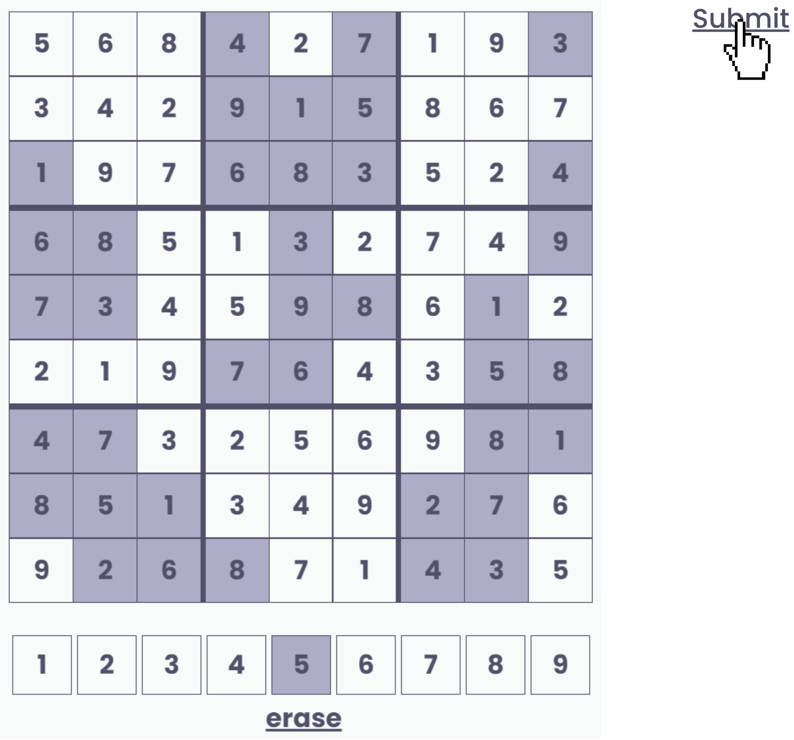

To fill a box, click on the number you would like to use, then click on the corresponding empty spot.


To empty a box, click on erase, then click on the filled spot to empty it.

Once you are done, you need to manually click on submit. If your submission is incorrect, you will be prompted to try again.
You will start off first with a practice round to get a feel of how to complete the task; then, you will move on to the official round. If you would like to, you may skip the practice round by clicking on the "Skip Practice Round" button you will find at the top right of the page.
Play Game